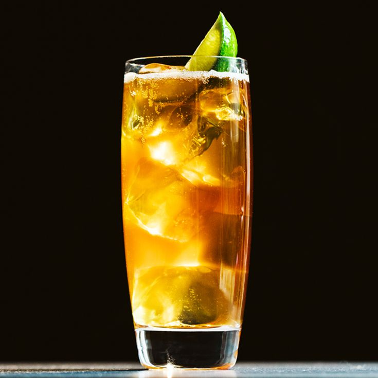

Dark and Stormy

This drink has been a go to drink of mine and is super easy to make!
Ingredients
- Jamaican Rum
- Ginger Beer
- Lime
Steps
- Pour 3oz Jamaican Rum into a glass with ice in it
- Fill rest of glass with Ginger Beer
- OPTIONAL: squeeze a lime wedge into glass